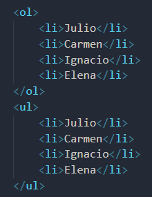
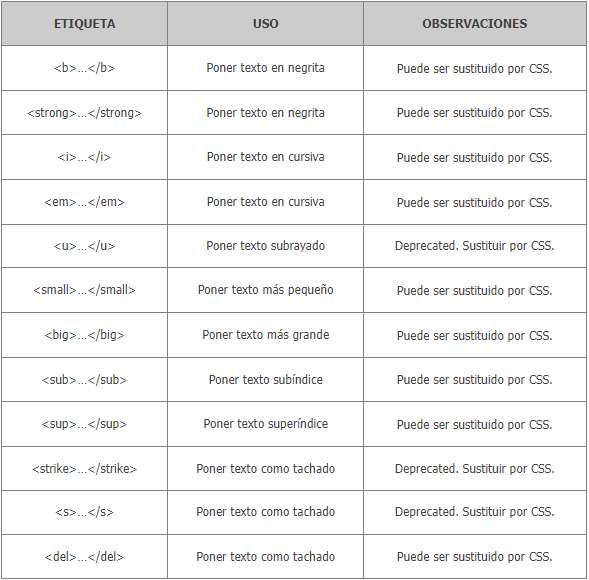
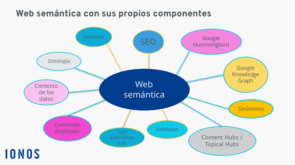

Este es un párrafo que esta delimitado por la etiqueta p de párrafo. y es un elemento de bloque al igual que los anteriores, por eso al acabar el texto salta a la línea siguiente.
Este es otro párrafo, tambien creado con la etiqueta p, pero más corto.
de Lista Descripcion Las listas se usan para citar, numerar y definir cosas. Cada uno de los elementos de la lista comenzará con una etiqueta , que puede o no llevar su correspondiente de cierre. img figure picture audio video Ejemplo
Etiquetas de Formato Descripcion Etiquetas utilizadas con texto en ArcGIS que permiten modificar el formato de un fragmento en una cadena de caracteres de texto. Esto permite crear un texto con formato mixto donde, por ejemplo, una palabra en una oración esté subrayada. Ejemplo
Semantica de la web Descripcion La web semántica añade información semántica a los contenidos de la web y confiere a las máquinas la capacidad de distinguir entre significados (según el contexto, un signo, por ejemplo una palabra, puede tener varios significados y diferentes signos pueden tener el mismo significado). Ejemplo
